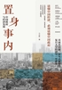

Builder
把复杂问题拆成可以落地的产品与行动。
01
ABOUT · 关于我
我在鄱阳湖边的一座小镇长大。后来湖风留在身后，道路在脚下铺开，我去长沙读书，又在工作与远行中走到深圳。
我喜欢数字与技术的清醒，也珍惜阅读和旅行带来的辽阔。比起标准答案，我更愿意理解具体的人，做真正有用的事，并在匆忙的世界里保留好奇与真诚。
往前走，别回头——来路自有回声，前方仍有风景。
把复杂问题拆成可以落地的产品与行动。
在数字经济、金融科技与 AI 之间持续学习。
借别人的眼睛看世界，也留下自己的判断。
用脚丈量路途，也用经历重新理解生活。
02
EDUCATION · 教育
CHANGSHA · 28.23°N
数字经济学学士 · GPA 89.6
SHENZHEN · 22.54°N
金融学理学硕士 · 金融科技方向
PRACTICE
3 城 · 20+ 家机构参与“非来湘会”湖南省对非产业调研，走访长沙、平江、邵阳。
RESEARCH
论文与竞赛在研究中练习严谨，在比赛里学习协作与表达。
COMMUNITY
组织与陪伴参与年级会文体、心理工作与金融科技学习沙龙。
MOTION
80 km毅行、定向越野、健身跑，连续两年获评“体质达人”。
03
WORK · 工作
AI DATA DEVELOPMENT
AI 数据开发实习生
USER PRODUCT ANALYTICS
数据分析实习生
04
SELECTED OUTCOMES · 成果
第二作者 · 2025
第二作者 · 2025
国家一等奖 · 2024
国家三等奖 · 2023
中南赛区一等奖 · 2024
计算机软件著作权
05
TRAVEL · 旅行
06
READING · 阅读
144 本读过
522 天有效阅读
2434 条笔记留下的思考
Reading shapes how I build. 从技术工具到经济系统，从人类行为到个人生命，书页之间也有一条向前的路。

Andreas C. Müller · Sarah Guido
TECHNOLOGY
Robert I. Kabacoff
DATA
兰小欢
ECONOMY单伟建
FINANCE
罗伯特·西奥迪尼
PSYCHOLOGY
戴维·巴斯
HUMAN
李飞飞
LIFE & AI
麦家
LITERATURE07
NOW · 此刻
2026 / 07
把金融、数据与产品放进同一个问题框架里。
关心技术如何穿过流程，抵达真实的人和结果。
给理性一点方向，也给生活留一些旷野。
CONTACT · 联系